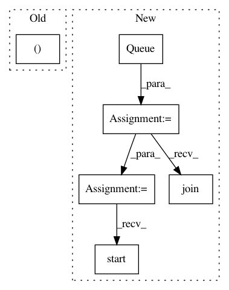

f80bc276189c2e35894faa73871b1b4ee6202ef9,bin/basenji_train_queues.py,,run,#Any#Any#Any#Any#Any#Any#,44
Before Change
// print update
print("Epoch: %3d, Steps: %7d, Train loss: %7.5f," % (epoch+1, steps, train_loss), end="")
print(" Valid loss: %7.5f, Valid R2: %7.5f," % (valid_loss, valid_r2), end="")
print(" Time: %s%s" % (time_str, best_str))
sys.stdout.flush()
// update epoch
After Change
FLAGS.ensemble_rc, ensemble_shifts)
// launch accuracy compute thread
acc_queue = Queue()
acc_thread = AccuracyWorker(acc_queue)
acc_thread.start()
// checkpoints
saver = tf.train.Saver()
with tf.Session() as sess:
train_writer = tf.summary.FileWriter(FLAGS.logdir + "/train",
sess.graph) if FLAGS.logdir else None
coord = tf.train.Coordinator()
tf.train.start_queue_runners(coord=coord)
if FLAGS.restart:
// load variables into session
saver.restore(sess, FLAGS.restart)
else:
// initialize variables
t0 = time.time()
print("Initializing...")
sess.run(tf.local_variables_initializer())
sess.run(tf.global_variables_initializer())
print("Initialization time %f" % (time.time() - t0))
train_loss = None
best_loss = None
early_stop_i = 0
epoch = 0
while (train_epochs is not None and epoch < train_epochs) or \
(train_epochs is None and early_stop_i < FLAGS.early_stop):
t0 = time.time()
// save previous
train_loss_last = train_loss
// train epoch
sess.run(training_init_op)
train_loss, steps = model.train_epoch_tfr(sess, train_writer, train_epoch_batches)
// block for previous accuracy compute
acc_queue.join()
// test validation
sess.run(test_init_op)
valid_acc = model.test_tfr(sess, test_epoch_batches)
In pattern: SUPERPATTERN
Frequency: 3
Non-data size: 6
Instances
Project Name: calico/basenji
Commit Name: f80bc276189c2e35894faa73871b1b4ee6202ef9
Time: 2018-09-11
Author: drk@calicolabs.com
File Name: bin/basenji_train_queues.py
Class Name:
Method Name: run
Project Name: keras-team/keras
Commit Name: 9a50d7bece2e09093f7eec251fc2be5736b131da
Time: 2018-01-09
Author: myutwo150@users.noreply.github.com
File Name: tests/keras/applications/applications_test.py
Class Name:
Method Name: test_densenet_variable_input_channels
Project Name: calico/basenji
Commit Name: 3f64cab25b48c01711825de13940ffb81ad4d74b
Time: 2018-11-19
Author: drk@calicolabs.com
File Name: bin/basenji_train2.py
Class Name:
Method Name: run